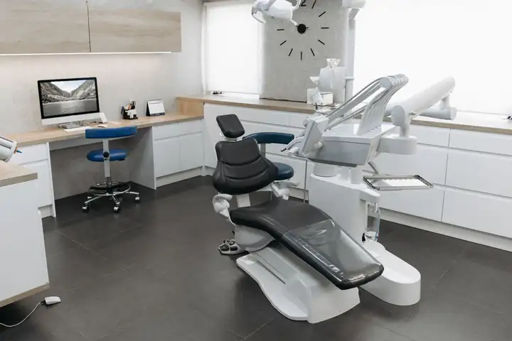
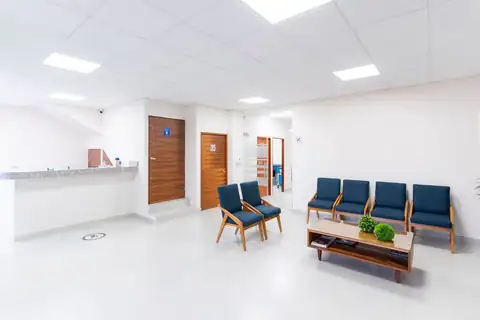
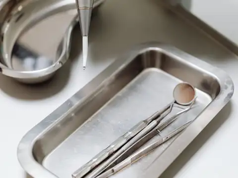

Tu primera visita, paso a paso
Consultorio odontológico (Demo). Mirá cómo es tu primera visita y agendá por WhatsApp.
(Demo) Te lleva al WhatsApp de Multitec

- Dónde
- Zona Centro. Dirección de ejemplo.
- Cuándo
- Lunes a viernes, 08:30 a 18:00; sábados, 08:30 a 12:30 (ejemplo)
- Urgencias
- Si es una urgencia, llamá a emergencias.
La primera visita, en 5 pasos
Así podría ser tu primera visita. Pasos de ejemplo (Demo).
Pasos de ejemplo (Demo). Cada consultorio define su propio proceso.
(Demo) Te lleva al WhatsApp de Multitec
-
Paso 1 de 5: Escribís
Nos contás por WhatsApp que querés agendar una visita.
Conversación de ejemplo · se arma para tu negocio
Asistente de Consultorio Abril
- Cliente: Hola, ¿sos un bot? Quiero consultar por una limpieza
- Asistente de Consultorio Abril: Sí, soy el asistente automático de Consultorio Abril. ¿Para qué día te gustaría el turno?
- Cliente: ¿Cuánto sale?
- Asistente de Consultorio Abril: Te tomo los datos y el consultorio te confirma el turno y el valor. ¿Me pasás tu nombre?
- Cliente: Soy nombre (cargado por el cliente)
- Asistente de Consultorio Abril: Gracias, nombre (cargado por el cliente). Se lo paso a una persona del consultorio y te confirman por WhatsApp.
Conversación de ejemplo (Demo). El asistente ayuda a agendar. Lo demás lo ve el consultorio. Si es una urgencia, llamá a emergencias. -
Paso 2 de 5: Te damos un horario
El consultorio te confirma un horario.
-
Paso 3 de 5: Llegás
Te esperamos en el consultorio, a la hora acordada.
-
Paso 4 de 5: Revisión del profesional
El profesional te recibe y conversa con vos.
-
Paso 5 de 5: Plan
Con el profesional definen los pasos a seguir.
Tratamientos
Tocá uno para ver de qué se trata. Todo lo define el profesional en la consulta.
-
Limpieza
Limpieza dental de rutina con el profesional.
Consultar por WhatsApp(Demo) Te lleva al WhatsApp de Multitec
-
Ortodoncia
Consulta de ortodoncia con el profesional.
Consultar por WhatsApp(Demo) Te lleva al WhatsApp de Multitec
-
Blanqueamiento
Consulta sobre blanqueamiento dental con el profesional.
Consultar por WhatsApp(Demo) Te lleva al WhatsApp de Multitec
-
Implantes
Consulta sobre implantes dentales con el profesional.
Consultar por WhatsApp(Demo) Te lleva al WhatsApp de Multitec
-
Odontopediatría
Atención odontológica para niñas y niños.
Consultar por WhatsApp(Demo) Te lleva al WhatsApp de Multitec
-
Urgencias
Si es una urgencia, llamá a emergencias.
Descripciones de ejemplo (Demo). Esto no reemplaza una consulta profesional.
Equipo
Nombres y áreas de ejemplo (Demo). No son personas reales.
Valeria (ejemplo)
Área de ejemplo: odontología general
Gustavo (ejemplo)
Área de ejemplo: ortodoncia
Lorena (ejemplo)
Área de ejemplo: niñas y niños
Equipo de ejemplo (Demo).
El lugar
Fotos de ejemplo (Demo).


Preguntas
Solo las prácticas. Lo demás lo conversás con el consultorio.
-
¿Cómo se paga?
Se puede pagar en efectivo o por transferencia (ejemplo).
-
¿Puedo cambiar o cancelar mi horario?
Sí. Avisanos por WhatsApp y lo cambiamos para que otra persona pueda usarlo (ejemplo).
-
¿Cómo llego?
Estamos en Zona Centro. Dirección de ejemplo. Abrí el mapa de abajo.
Respuestas de ejemplo (Demo). Cada consultorio define las suyas.
Dónde estamos
Zona Centro. Dirección de ejemplo.
Lunes a viernes, 08:30 a 18:00; sábados, 08:30 a 12:30 (ejemplo). Domingos cerramos.
Mapa de ejemplo (Demo).
Si es una urgencia, llamá a emergencias.
(Demo) Te lleva al WhatsApp de Multitec